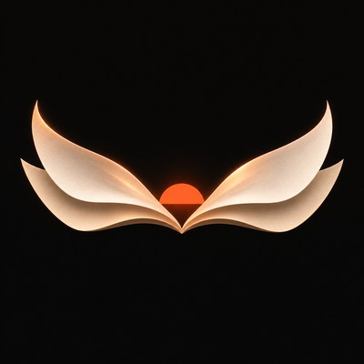
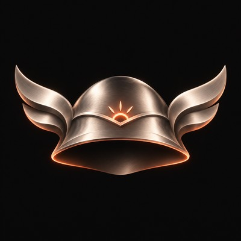
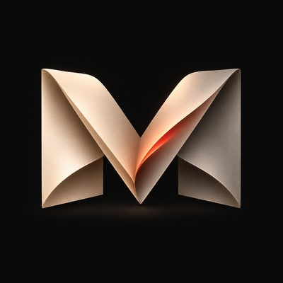
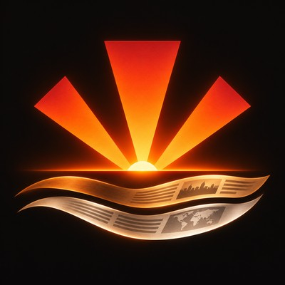

Varianta 01
Křídla úsvitu
Rozevřené noviny jako křídla a mezi nimi vycházející slunce. Navazuje na dnešní ikonu.
Zobrazit naplno ↗Hub
PWA
32 px
16 px
Kliknutím otevřeš obrázek v plné velikosti. Dole pod každou variantou je ukázka pro rozcestník, plochu a záložku prohlížeče.

Rozevřené noviny jako křídla a mezi nimi vycházející slunce. Navazuje na dnešní ikonu.
Zobrazit naplno ↗Portrét posla v ranním světle. Osobnější varianta inspirovaná BroJobem.
Zobrazit naplno ↗
Kovová křídla a znak úsvitu. Odkaz na Herma, s atmosférou strážce pokladnice.
Zobrazit naplno ↗
Přeložené listy tvoří písmeno M. Nejjednodušší silueta pro malou ikonu v záložce.
Zobrazit naplno ↗
Oranžové paprsky nad novinami. Nejsvětelnější varianta, inspirovaná DreamCatcherem.
Zobrazit naplno ↗